Question 5 : K-means Clustering
Contents
a. Choosing random centroids and plotting them
data = [1 4 1;1 3 1;0 4 2;2 5 2;5 1 1;6 2 2;4 0 1;5 2 2]; x = data(:,1:2); X1 = data(:,1); X2 = data(:,2); ig = data(:,3); class_one = ig==1; class_two = ig==2; centInit(1,1) = sum(X1(class_one))/sum(class_one); centInit(1,2) = sum(X2(class_one))/sum(class_one); centInit(2,1) = sum(X1(class_two))/sum(class_two); centInit(2,2) = sum(X2(class_two))/sum(class_two); % centInit = [5,1;1,0]; disp('The centroids are: ') disp(centInit) plot(x(:,1), x(:,2), 'ko') hold on; plot(centInit(1,1), centInit(1,2), 'ro', 'MarkerFaceColor', 'r', ... 'MarkerSize', 8); plot(centInit(2,1), centInit(2,2), 'bo', 'MarkerFaceColor', 'b', ... 'MarkerSize', 8); xlabel('x1'); ylabel('x2'); xlim([min(min(data(1:end,1))-2,min(centInit(1:end,1))-2), max(max(data(1:end,1))+2,max(centInit(1:end,1))+2)]) ylim([min(min(data(1:end,2))-2,min(centInit(1:end,2))-2), max(max(data(1:end,2))+2,max(centInit(1:end,2))+2)])
The centroids are:
2.7500 2.0000
3.2500 3.2500
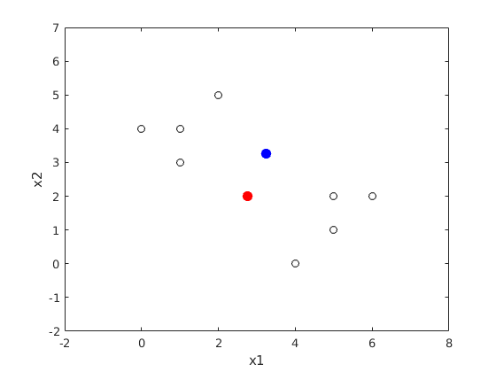 b. Assigning initial labels to the random centroids
plotStyle = {'bo','ro'};
j = 1;
k = 1;
for i = 1:size(data,1)
if data(i,end) == 1
group1(j,:) = data(i,:);
j = j + 1;
plot(data(i,1),data(i,2),plotStyle{1})
hold on
elseif data(i,end) == 2
group2(k,:) = data(i,:);
k = k + 1;
plot(data(i,1),data(i,2),plotStyle{2})
hold on
end
end
hold on;
plot(centInit(1,1), centInit(1,2), 'bo', 'MarkerFaceColor', 'b', ...
'MarkerSize', 8);
plot(centInit(2,1), centInit(2,2), 'ro', 'MarkerFaceColor', 'r', ...
'MarkerSize', 8);
xlabel('x1');
ylabel('x2');
xlim([min(min(data(1:end,1))-2,min(centInit(1:end,1))-2), max(max(data(1:end,1))+2,max(centInit(1:end,1))+2)])
ylim([min(min(data(1:end,2))-2,min(centInit(1:end,2))-2), max(max(data(1:end,2))+2,max(centInit(1:end,2))+2)])
hold off
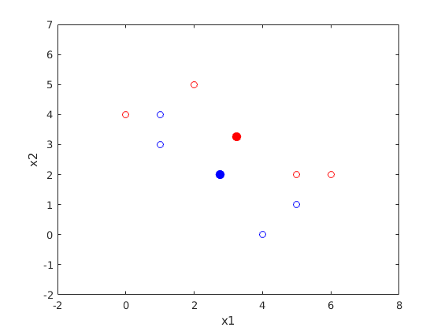 c. Assigning samples to new centroids, d. & e.
prev=0; [A,B] = size(x); iter=0; err = zeros (1,100); while (iter < 100) old_cent = centInit; % Calculate distances of each point to the chosen centroids d = pdist2(centInit,x, 'euclidean'); d = d.^2; % Find the minimum distance centroid and assign the cluster label to each data sample [data2,cluster_assignment]= min(d,[],1); iter = iter + 1; % Calculate new centroids by taking a mean of all points in the existing cluster for i=1:2 idx = find(cluster_assignment == i); centInit(i,:) = mean(x(idx,:),1); end % Calculating the sum of distances to the centres error = sum(data2); % Difference of previous SSE corresponding to previous centers to new SSE to new centers sse = abs(prev-error); % Stop clustering if SSE falls below 0.001 if( sse < 0.001) break; % Save the SSE to compare against new SSE else prev=error; end % Array of SSEs calculated per iteration err(iter) = error; data(:,3) = cluster_assignment; j = 1; k = 1; for i = 1:size(data,1) if data(i,end) == 1 group1(j,:) = data(i,:); j = j + 1; plot(data(i,1),data(i,2),plotStyle{1}) hold on elseif data(i,end) == 2 group2(k,:) = data(i,:); k = k + 1; plot(data(i,1),data(i,2),plotStyle{2}) hold on end end hold on; plot(old_cent(1,1), old_cent(1,2), 'bo', 'MarkerFaceColor', 'b', ... 'MarkerSize', 8); plot(old_cent(2,1), old_cent(2,2), 'ro', 'MarkerFaceColor', 'r', ... 'MarkerSize', 8); xlabel('x1'); ylabel('x2'); xlim([min(min(data(1:end,1))-2,min(old_cent(1:end,1))-2), max(max(data(1:end,1))+2,max(old_cent(1:end,1))+2)]) ylim([min(min(data(1:end,2))-2,min(old_cent(1:end,2))-2), max(max(data(1:end,2))+2,max(old_cent(1:end,2))+2)]) title(sprintf('Iteration %d', iter)); snapnow; hold off; disp('The new centroid is: ') disp(centInit) end disp('The centroids did not change, proving their stability')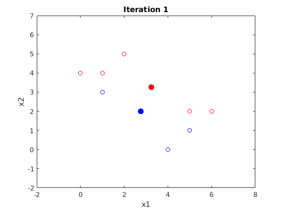
The new centroid is:
3.3333 1.3333
2.8000 3.4000
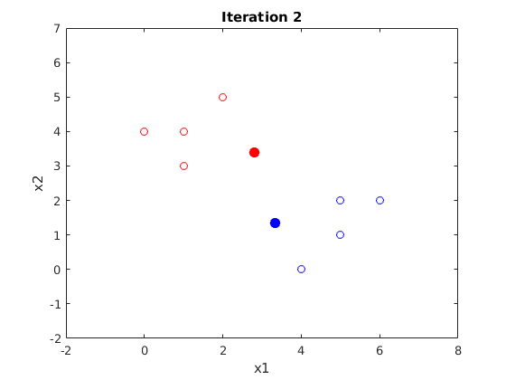 The new centroid is:
5.0000 1.2500
1.0000 4.0000
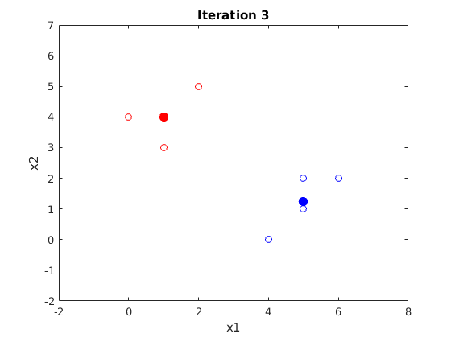 The new centroid is:
5.0000 1.2500
1.0000 4.0000
The centroids did not change, proving their stability
Question 6 : Hierarchical Clustering
a. Complete linkage hierarchical clustering
D = [0 0.3 0.4 0.7 0.6; 0.3 0 0.5 0.8 0.2; 0.4 0.5 0 0.45 0.4; 0.7 0.8 0.45 0 0.35; 0.6 0.2 0.4 0.35 0]; disp('Given dissimilarity matrix: ') disp(D) D_cell{1} = D; old_D = D; [r,c] = size(D); p = 1; while r > 2 minimum = D(2,1); % minimum other than 0; in other words, second minimum. idx_r = 2; idx_c = 1; for i = 2:r for j = 1:(i-1) if D(i,j) <= minimum minimum = D(i,j); idx_r = i; idx_c = j; end end end disp('minimum distance in the matrix is: ') disp(minimum) smallest(p) = minimum; % Swap % This part swaps the second minimum in the row the minimum is found % and swaps with maximum value in that row. This preserves the second % minimum value of the matrix. for i = size(D,2) if max(D(idx_c,:))==max(D(:)) [a,b] = max(D(idx_c,:)); A2 = sort(D(:,b)); min_in_col = A2(2); min_in_col_pos = find(D(:,b)==min_in_col); D(min_in_col_pos,b) = a; end end p = p + 1; for i = 2:r for j = 1:c D(i,j) = D(j,i); end end % Delete row and column: % This part deletes the row and the column in which the minimum value % is found. D(idx_c,:) = []; D(:,idx_c) = []; [r,c]=size(D); disp('Dissimilarity matrix after dimension reduction: ') disp(D) D_cell{p} = D; end if r==2 && c==2 minimum = D(2,1); end smallest(p) = minimum; disp('minimum distance in the matrix is: ') disp(minimum) i = 1; while i <= size(smallest,2) [a,b] = find(old_D==smallest(i)); [c,~] = find(D_cell{i}==smallest(i)); l1 = length(a)/2; l2 = length(c)/2; if l1 > 1 && l2 > 1 j = 0; while j < l1 rows(i) = a((j)*2+1); columns(i) = b((j)*2+1); j = j+1; i = i+1; end else if i == 1 rows(i) = a(end-1); else rows(i) = rows(i-1)+1; end columns(i) = b(end-1); i = i+1; end end rows = rows'; columns = columns'; heights = smallest'; Table_Q4 = table(rows, columns, heights); disp(Table_Q4)
Given dissimilarity matrix:
0 0.3000 0.4000 0.7000 0.6000
0.3000 0 0.5000 0.8000 0.2000
0.4000 0.5000 0 0.4500 0.4000
0.7000 0.8000 0.4500 0 0.3500
0.6000 0.2000 0.4000 0.3500 0
minimum distance in the matrix is:
0.2000
Dissimilarity matrix after dimension reduction:
0 0.4000 0.7000 0.6000
0.4000 0 0.4500 0.4000
0.7000 0.4500 0 0.8000
0.6000 0.4000 0.8000 0
minimum distance in the matrix is:
0.4000
Dissimilarity matrix after dimension reduction:
0 0.7000 0.6000
0.7000 0 0.8000
0.6000 0.8000 0
minimum distance in the matrix is:
0.6000
Dissimilarity matrix after dimension reduction:
0 0.8000
0.8000 0
minimum distance in the matrix is:
0.8000
rows columns heights
____ _______ _______
5 2 0.2
3 1 0.4
5 3 0.6
6 2 0.8
b. Single linkage hierarchical clustering
clear D = [0 0.3 0.4 0.7 0.6; 0.3 0 0.5 0.8 0.2; 0.4 0.5 0 0.45 0.4; 0.7 0.8 0.45 0 0.35; 0.6 0.2 0.4 0.35 0]; disp('Given dissimilarity matrix: ') disp(D) D_cell{1} = D; old_D = D; [r,c] = size(D); p = 1; while r > 2 minimum = D(2,1); % minimum other than 0; in other words, second minimum. idx_r = 2; idx_c = 1; for i = 2:r for j = 1:(i-1) if D(i,j) < minimum minimum = D(i,j); idx_r = i; idx_c = j; end end end smallest(p) = minimum; disp('minimum distance in the matrix is: ') disp(minimum) % Swap % This part swaps the second minimum in the row the minimum is found % and swaps with maximum value in that row. This preserves the second % minimum value of the matrix. if min(D(1,2:end))==D(1,idx_c) [~,b] = max(D(1,:)); D(1,b) = D(1,idx_c); remember(p) = idx_c; else remember(p) = 0; end p = p + 1; for i = 2:r for j = 1:c D(i,j) = D(j,i); end end % Delete row and column % This part deletes the row and the column in which the minimum value % is found. D(idx_c,:) = []; D(:,idx_c) = []; [r,c]=size(D); disp('Dissimilarity matrix after dimension reduction: ') disp(D) D_cell{p} = D; end if r==2 && c==2 minimum = D(2,1); end smallest(p) = minimum; disp('minimum distance in the matrix is: ') disp(minimum) i = 1; while i <= size(smallest,2) [a,b] = find(old_D==smallest(i)); [c,~] = find(D_cell{i}==smallest(i)); l1 = length(a)/2; l2 = length(c)/2; if l1 > 1 && l2 > 1 j = 0; while j < l1 rows(i) = a((j)*2+1); columns(i) = b((j)*2+1); j = j+1; i = i+1; end else if i == 1 rows(i) = a(end-1); else rows(i) = rows(i-1)+1; end columns(i) = b(end-1); i = i+1; end end rows = rows'; columns = columns'; heights = smallest'; Table = table(rows, columns, heights); disp(Table)
Given dissimilarity matrix:
0 0.3000 0.4000 0.7000 0.6000
0.3000 0 0.5000 0.8000 0.2000
0.4000 0.5000 0 0.4500 0.4000
0.7000 0.8000 0.4500 0 0.3500
0.6000 0.2000 0.4000 0.3500 0
minimum distance in the matrix is:
0.2000
Dissimilarity matrix after dimension reduction:
0 0.4000 0.3000 0.6000
0.4000 0 0.4500 0.4000
0.3000 0.4500 0 0.3500
0.6000 0.4000 0.3500 0
minimum distance in the matrix is:
0.3000
Dissimilarity matrix after dimension reduction:
0 0.4500 0.4000
0.4500 0 0.3500
0.4000 0.3500 0
minimum distance in the matrix is:
0.3500
Dissimilarity matrix after dimension reduction:
0 0.4000
0.4000 0
minimum distance in the matrix is:
0.4000
rows columns heights
____ _______ _______
5 2 0.2
6 1 0.3
7 4 0.35
8 3 0.4
Dendrograms
figure() complete = imread('complete.PNG'); imshow(complete); figure() single = imread('single.PNG'); imshow(single);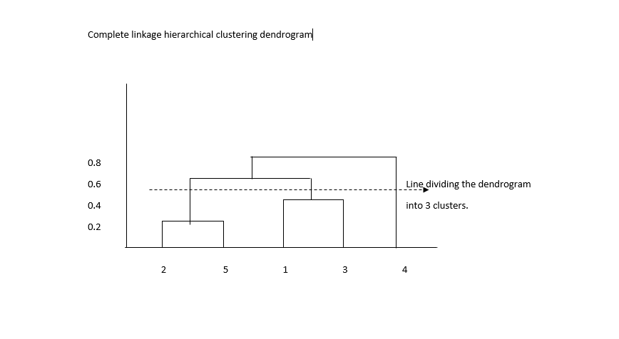 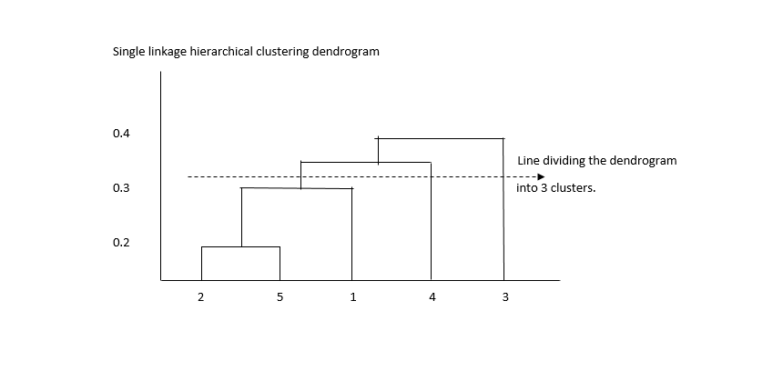
Complete linkage: Samples (2,5), and (1,3) are in one cluster, the cluster formed by samples 2,5,1, and 3, i.e. ((2,5),(1,3)) form the second cluster, and the cluster formed by all the samples ((2,5),(1,3),((2,5),(1,3)), and 4) form the third cluster.
Single linkage: Samples (2,5), and 1 are in one cluster, the cluster formed by samples 2,5,1, and 3, i.e. ((2,5),1,4) form the second cluster, and the cluster formed by all the samples ((2,5),1,4,3) form the third cluster.
fid = fopen('college_data.csv','r'); tline = fgets(fid); variables = strsplit(tline, ','); college_data = textscan(fid,'%d%s%s%d%d%d%d%d%d%d%d%d%d%d%d%d%d%d%d%d%d','delimiter',',', 'HeaderLines', 0); fclose(fid); % numeric_college_data = [college_data{4:end}]; numeric_college_data = double(numeric_college_data); trData = numeric_college_data; % minmax normalization for i = 1:size(trData,2) trData_minmaxnorm(:,i) = (trData(:,i)-min(trData(:,i)))/(max(trData(:,i))-min(trData(:,i))); end numeric_college_data = trData_minmaxnorm; % Zscore normalization % for i = 1:size(trData,2) % trData_zscorenorm(:,i) = (trData(:,i)-mean(trData(:,i)))/std(trData(:,i)); % end % numeric_college_data = trData_zscorenorm; % Y = pdist(numeric_college_data); Y = squareform(Y); Z = linkage(Y, 'complete'); figure() [H,nodes,outperm] = dendrogram(Z); set(gca,'Xtick',1:1:size(unique(college_data{1,3}))) set(gca, 'XTickLabel', (college_data{1,3}(outperm))') xtickangle(45) title('complete linkage for all colleges')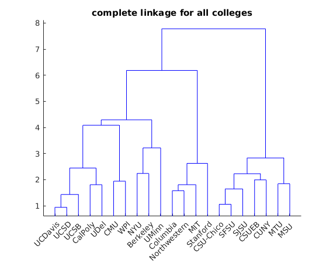
7 b
numeric_college_data_b = numeric_college_data; college_data_b = college_data; numeric_college_data_b((strcmp('CSU-Chico',college_data_b{1,3})),:)=[]; college_data_b{1,3}((strcmp('CSU-Chico',college_data_b{1,3})),:) = []; numeric_college_data_b((strcmp('Columbia',college_data_b{1,3})),:)=[]; college_data_b{1,3}((strcmp('Columbia',college_data_b{1,3})),:) = []; numeric_college_data_b((strcmp('Northwestern',college_data_b{1,3})),:)=[]; college_data_b{1,3}((strcmp('Northwestern',college_data_b{1,3})),:) = []; numeric_college_data_b((strcmp('SFSU',college_data_b{1,3})),:)=[]; college_data_b{1,3}((strcmp('SFSU',college_data_b{1,3})),:) = []; numeric_college_data_b((strcmp('Berkeley',college_data_b{1,3})),:)=[]; college_data_b{1,3}((strcmp('Berkeley',college_data_b{1,3})),:) = []; numeric_college_data_b((strcmp('UCDavis',college_data_b{1,3})),:)=[]; college_data_b{1,3}((strcmp('UCDavis',college_data_b{1,3})),:) = []; numeric_college_data_b((strcmp('UCSB ',college_data_b{1,3})),:)=[]; college_data_b{1,3}((strcmp('UCSB ',college_data_b{1,3})),:) = []; numeric_college_data_b((strcmp('WPI',college_data_b{1,3})),:)=[]; college_data_b{1,3}((strcmp('WPI',college_data_b{1,3})),:) = []; numeric_college_data_e = numeric_college_data_b; college_data_e = college_data_b{1,3}; % Y_b = pdist(numeric_college_data_b); Y_b = squareform(Y_b); % complete Z_b_complete = linkage(Y_b, 'complete'); figure() [~,~,outperm_b] = dendrogram(Z_b_complete); set(gca,'Xtick',1:1:size(unique(college_data_b{1,3}))) set(gca, 'XTickLabel', (college_data_b{1,3}(outperm_b))') xtickangle(45) title('complete linkage for selected colleges') % average Z_b_average = linkage(Y_b, 'average'); figure() [~,~,outperm_b] = dendrogram(Z_b_average); set(gca,'Xtick',1:1:size(unique(college_data_b{1,3}),1)) set(gca, 'XTickLabel', (college_data_b{1,3}(outperm_b))') xtickangle(45) title('average linkage for selected colleges')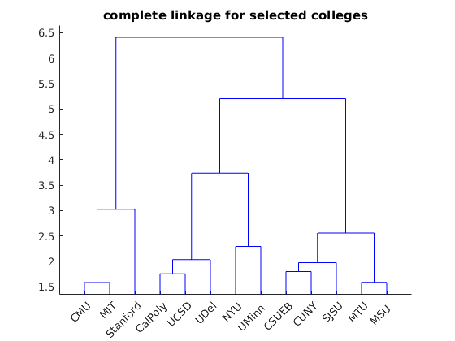 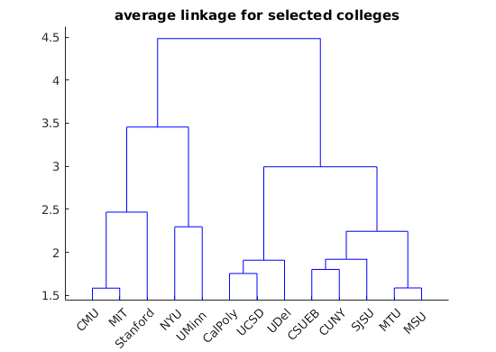
7 c
Z_b_single = linkage(Y_b, 'single'); figure() [H_b,nodes_b,outperm_b] = dendrogram(Z_b_single); set(gca,'Xtick',1:1:size(unique(college_data_b{1,3}))) set(gca, 'XTickLabel', (college_data_b{1,3}(outperm_b))') xtickangle(45) title('single linkage for selected colleges') % lineage_matrix = Z_b_single; k = 3; clusters = cluster(lineage_matrix,'maxclust',k); % Find the distance threshold t = sort(lineage_matrix(:,3)); th = t(size(lineage_matrix,1)+2-k); figure() dendrogram(lineage_matrix,0,'colorthreshold', th); set(gca,'Xtick',1:1:size(unique(college_data_b{1,3}))) set(gca, 'XTickLabel', (college_data_b{1,3}(outperm_b))') xtickangle(45) title('single linkage for selected colleges with k = 3')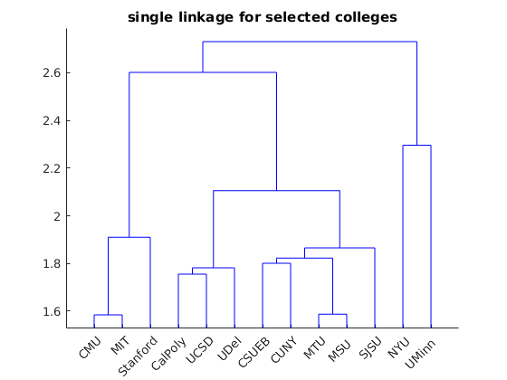 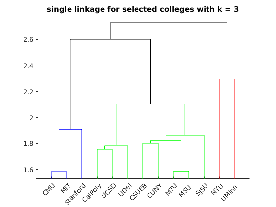
7 d
[coeff,score,latent] = pca(numeric_college_data); figure() biplot(score(:,1:2),'varlabels',college_data{1,3}); xlabel('1st principal component') ylabel('2nd principal component') % axis([-0.5 0.5 -0.5 0.6]) % figure() % plot(score(:,1),score(:,2),'o');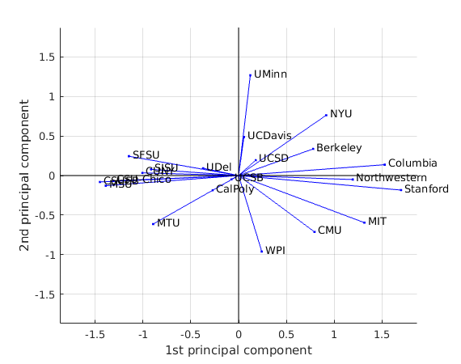
7 e
idx = kmeans(numeric_college_data_e,3); % disp(idx) cluster1 = college_data_e(idx==1); cluster2 = college_data_e(idx==2); cluster3 = college_data_e(idx==3); disp('Kmeans') disp(cluster1) disp(cluster2) disp(cluster3)
Kmeans
'CMU'
'MIT'
'NYU'
'Stanford'
'CSUEB'
'CUNY'
'MTU'
'MSU '
'SJSU'
'UDel'
'CalPoly'
'UCSD'
'UMinn '
7 f
idx_medoids = kmedoids(numeric_college_data_e,3); % disp(idx_medoids) cluster1_medoids = college_data_e(idx_medoids==1); cluster2_medoids = college_data_e(idx_medoids==2); cluster3_medoids = college_data_e(idx_medoids==3); disp('Kmedoids') disp(cluster1_medoids) disp(cluster2_medoids) disp(cluster3_medoids)
Kmedoids
'CMU'
'MIT'
'Stanford'
'CSUEB'
'CUNY'
'MTU'
'MSU '
'SJSU'
'CalPoly'
'NYU'
'UCSD'
'UDel'
'UMinn '